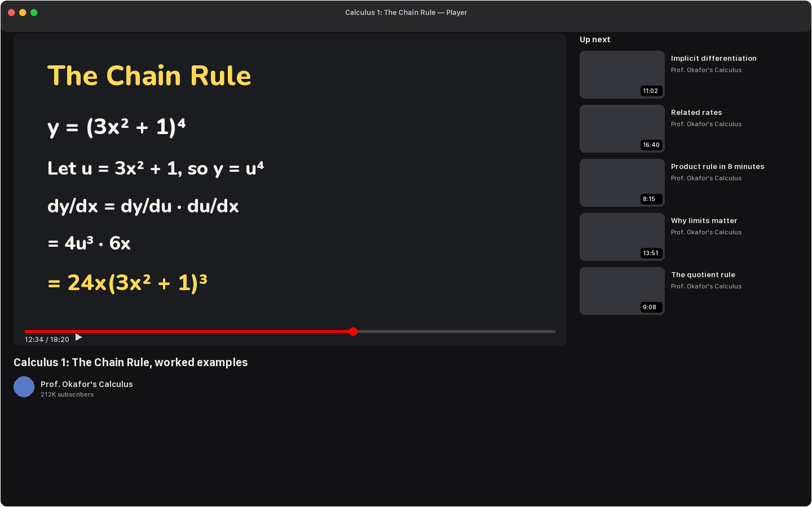
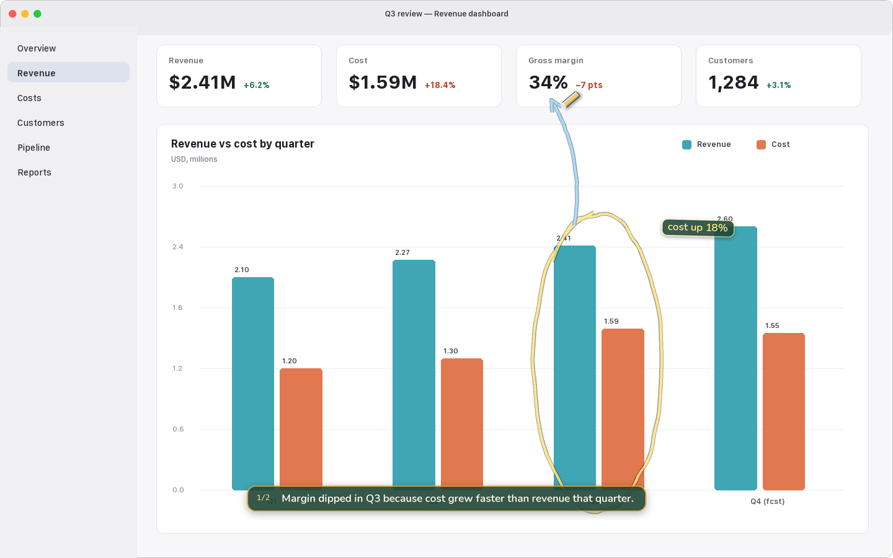
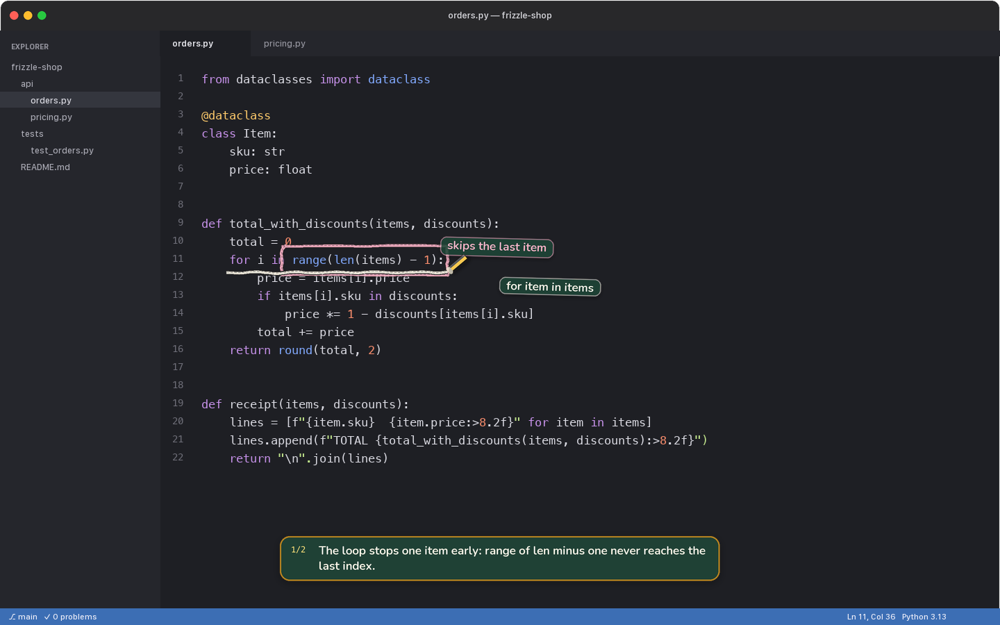
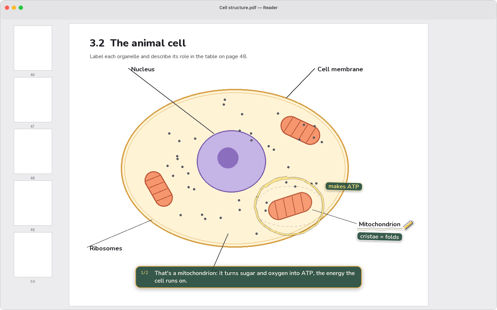
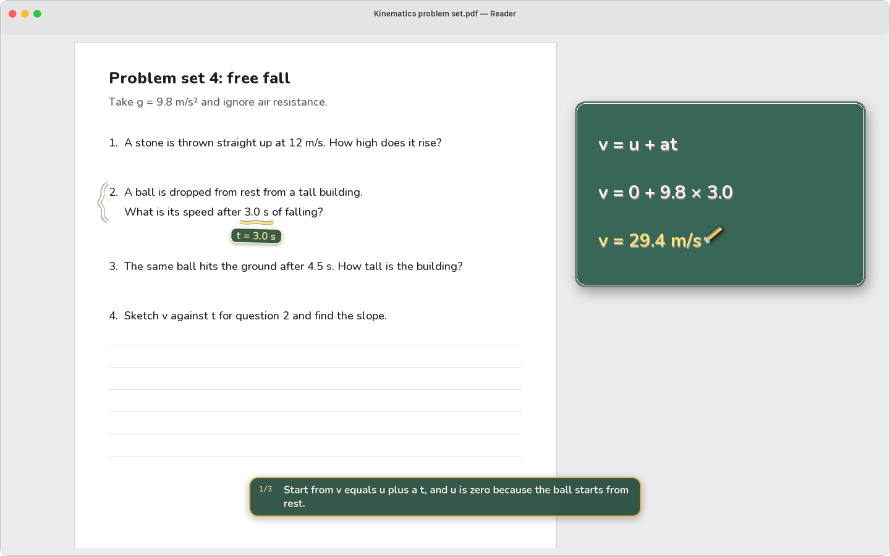

A teacher for whatever's on your screen.
Hold ⌥⌘ and ask out loud. Frizzle looks at what you're looking at, answers in a natural voice, and points with chalk as it talks. A lecture, a chart, a stack trace, a diagram, a formula in a spreadsheet.
Free to start, Frizzle Pro for more. macOS 27 on Apple silicon.
Five screens, the same two keys.
A calculus lecture, a revenue dashboard, a Python bug, a cell diagram and a spreadsheet. Pick one and watch the chalk.

'%3E%3Crect x='6' y='17.5' width='34' height='11' rx='3.2' fill='%23fac74f' stroke='%23211c19' stroke-width='1.4'/%3E%3Crect x='6' y='17.5' width='34' height='3.5' rx='2' fill='%23fff' opacity='.3'/%3E%3Crect x='6' y='17.5' width='6' height='11' rx='3' fill='%23faf2db' opacity='.8'/%3E%3C/g%3E%3C/svg%3E)
Hold. Talk. Let go.
There's no window to open and nothing to paste. Frizzle lives in the menu bar and waits for the chord.
Hold ⌥⌘ and ask.
The menu bar icon grows a ring to show it's listening, and your words appear by the chalk as they're heard. Drag a loop around the part you mean if that helps.
Let go.
Frizzle takes one look at the screen, reads the text on it, and works out an answer. Nothing happens on a quiet release: a stray press never turns into a lesson.
Listen, and watch the chalk.
It answers your actual question first, one sentence at a time. Each sentence draws at most one mark, the moment the words name it. Press the chord again to cut it off.

why did margin dip in Q3?
It points while it talks.
A sentence and a mark go together. When Frizzle says "the Q3 bars", the circle lands on the Q3 bars as it says it. When a sentence doesn't name anything on screen, nothing is drawn. A wrong mark teaches the wrong thing; no mark costs nothing.
Marks stay with the window if you move it, and fade if you scroll the content away.

why does the total come out short?
Ask the way you would in class.
Frizzle remembers what it said and what it pointed at, for this sitting. Short answers for short questions, longer ones when the question earns it.
"Repeat that", "slower" and "skip ahead" happen instantly, without asking the model again. Start fresh any time with New conversation.

what does this part do?
Circle what you mean.
While you're holding the chord, drag a loop around the thing your question is about. It never reaches the app underneath. Your loop stays thin and dashed, so it never looks like one of Frizzle's marks.
With nothing circled, Frizzle works it out from the question, the window you're in, and what you asked before. If it genuinely can't tell, it asks which one.

how do I solve question 2?
When the answer isn't on the screen, it sketches.
Frizzle gets its own scratch board, placed where it won't cover what you're reading. Equation steps appear one line at a time as they're spoken. It can draw a pair of axes and a curve, label the parts of something, or lay out boxes and arrows for how data flows.
Everything it draws is built from a small set of shapes, so a formula is plotted, not guessed.
Private by default. Quiet by design.
Frizzle only looks when you hold the chord, and keeps nothing of what it saw.
Only when you ask.
Frizzle takes one picture of your screen at the moment you ask, and at no other time. That picture and your question go through Frizzle's server to the AI service that writes the lesson, for that answer only. What you say is recognized on your Mac.
Nothing is recorded or kept.
A screenshot lives only for the question it answers. The conversation is held in memory for the sitting and gone when you quit. With Follow along on, the last two minutes of the Mac's audio stay in memory so "what did she just say?" works.
Not an agent.
Frizzle never clicks, types, opens files, or runs on its own. It explains. The only thing it ever draws on is the glass in front of your screen, and Esc clears it.
A voice you'd want to listen to.
Every lesson is read aloud in a warm, natural voice that keeps step with the chalk. Pick the one you like in Settings. With no connection, a voice that runs on your Mac takes over.
Math is read the way a teacher says it, never the way a robot spells it.
Free to start. Pro if you want more.
Sign in with Apple or Google and ask. A free account has five lessons a day; pay only if you want more.
Everything Frizzle does.
- Five lessons a day
- Every lesson read aloud, in the voice you pick
- Follow along, circling, follow-ups
Billed monthly. Cancel any time.
- Fifteen lessons a day, three times the free plan
- Every lesson read aloud, in the voice you pick
- On every Mac you sign in on
Questions people ask.
What does it need from my Mac?
macOS 27 on Apple silicon, and an internet connection. Frizzle asks for Screen Recording (to see your screen when you ask) and Microphone (to hear the question). Both are only used while you hold the chord.
Does it work on anything, or just math?
Anything with text or a picture on it: lectures and slides, PDFs and papers, dashboards and spreadsheets, code and terminals, diagrams, settings screens, documents. It reads the text on screen and looks at the picture, so it does best when what you're asking about is visible.
What does Frizzle see, and where does it go?
Nothing until you ask. When you hold the keys, Frizzle takes one picture of the screen your pointer is on and sends it, with your question, through Frizzle's server to the AI service that writes the lesson. Everything visible on that screen is in the picture, so close anything private first. The lesson's words go the same way to be read aloud; your screen never does. Frizzle's server passes these on and keeps neither. What you say is turned into words on your Mac, and no recording is kept. Frizzle counts a few anonymous things, like how long an answer took, which you can switch off in Settings. Your questions are shared with us only if you turn that on.
What does it cost?
Frizzle is free to download, and a free account has five lessons a day, each one read aloud. Frizzle Pro is $9.99 a month for fifteen lessons a day. It's billed monthly and you can cancel any time.